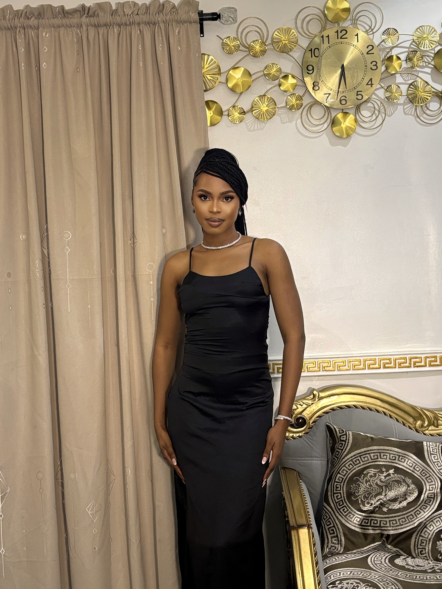
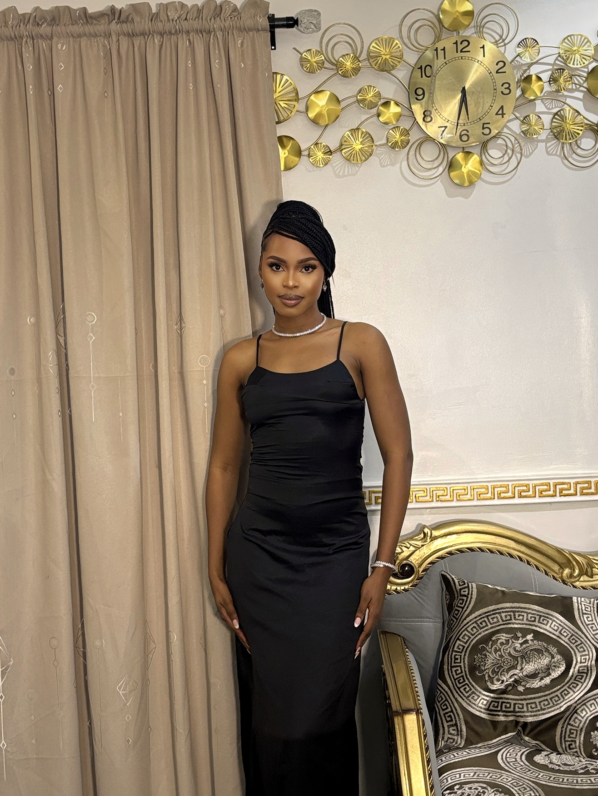

WHERE EMOTION MEETS THE LENS
Capturing stories, not just snapshots. I turn raw, fleeting moments into timeless visual poetry.
Whether it's a milestone celebration, a quiet candid, or the raw beauty of the world around us, I aim to capture more than just images — I capture feeling. Every frame is a reflection of a moment worth remembering. Let me help you preserve the magic of your journey, one heartfelt photograph at a time.


 
